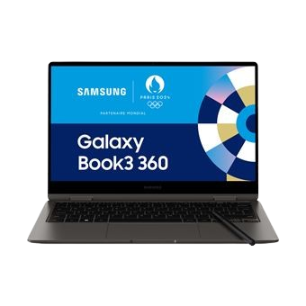

Samsung Book 3 - Puissance et polyvalence
Le Samsung Book 3 est un ordinateur portable élégant et performant, conçu pour répondre à toutes vos attentes, que ce soit pour le travail, les études ou les loisirs numériques. Avec sa technologie de pointe et son design raffiné, il allie performance et style.
Caractéristiques principales :
- Écran 15,6 pouces Full HD: Des images claires et détaillées pour une expérience visuelle optimale.
- Processeur Intel Core i5 de 13e génération: Une performance rapide et efficace pour le multitâche.
- 8 Go de RAM: Idéal pour une utilisation fluide, même avec plusieurs applications ouvertes.
- 512 Go SSD: Un espace de stockage rapide et suffisant pour vos fichiers et logiciels.
- Châssis élégant et léger: Facile à transporter, avec un poids d'environ 1,7 kg.
- Autonomie jusqu'à 10 heures: Restez connecté tout au long de la journée sans chercher une prise.
Pourquoi choisir le Samsung Book 3 ?
Le Samsung Book 3 est parfait pour les utilisateurs qui souhaitent un ordinateur performant, polyvalent et fiable, avec la garantie de qualité Samsung. Que ce soit pour travailler, regarder des films ou naviguer sur Internet, il répondra à toutes vos attentes.